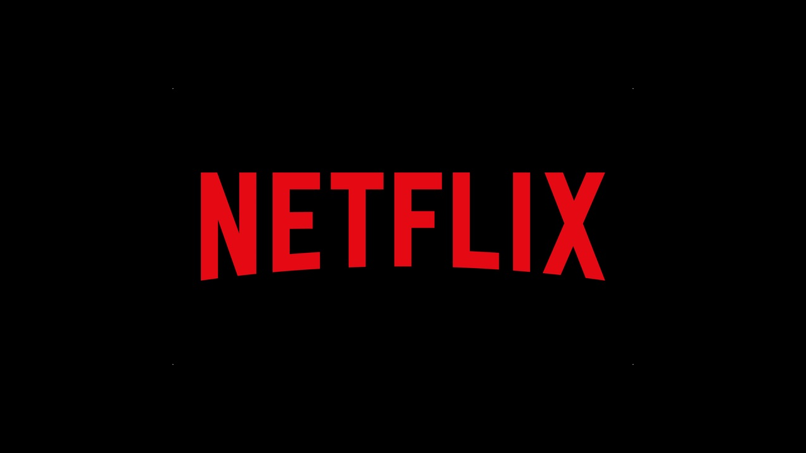
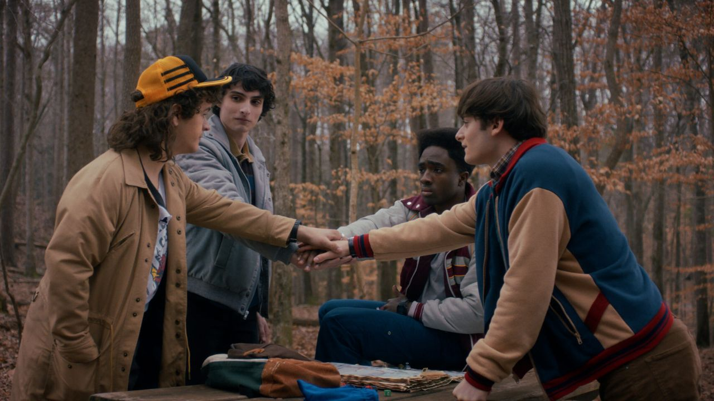

Netflix aposta alto em 2026 com grandes retornos e estreias
A plataforma divulgou uma lista com várias produções aguardadas, incluindo Enola Holmes 3, novas temporadas de Bridgerton e projetos de franquias famosas como One Piece.

A plataforma divulgou uma lista com várias produções aguardadas, incluindo Enola Holmes 3, novas temporadas de Bridgerton e projetos de franquias famosas como One Piece.

A Netflix confirmou “Stranger Things: Tales from '85”, uma animação que expande o universo da série original com novas histórias e monstros.
Entre os destaques estão a 2ª temporada de One Piece e o filme Peaky Blinders: O Homem Imortal, além de várias séries e filmes populares entrando no catálogo.
Sequências como Avengers: Doomsday e Toy Story 5 mostram que Hollywood segue investindo em universos já consagrados
Produções baseadas em jogos como Mortal Kombat e Resident Evil ganham cada vez mais espaço no cinema
Produções derivadas de franquias populares ampliam histórias e fidelizam fãs